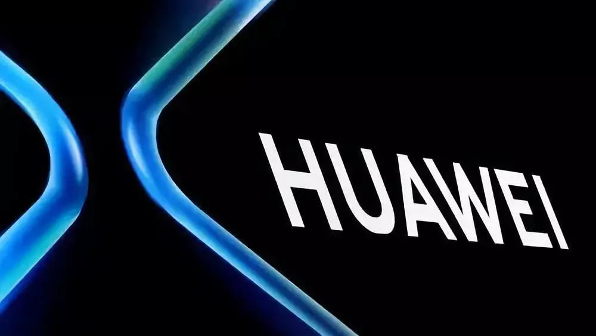

过去20多年全球通信行业的最大事件是华为的意外崛起，然而，令人纳闷的是，“创新”一词在华为的“管理词典”中却不多见，这一切背后到底反映着什么样的企业哲学观和故事？
任正非曾经说过，不要什么都互联网，可是，华为手机的案例却证明了这家公司的触网能力非同一般。本文似乎给出了答案，华为的创新是跟着客户走，同时任正非也在追求工业文化与互联网文化的融合之道。
华为是一家创新型的企业吗？前不久，欧洲一家通信制造商的高管在一个非正式场合这样讲道：过去20多年全球通信行业的最大事件是华为的意外崛起，华为以价格和技术的破坏性创新彻底颠覆了通信产业的传统格局，从而让世界绝大多数普通人都能享受到低价优质的信息服务。
然而，令人纳闷的是，“创新”一词在华为的“管理词典”中却不多见，在任正非20多年来的上百次讲话、文章和华为的文件中，“创新”是被提到最少的。尤其在近两年所谓的“互联网思维”大行其道、风靡整个中国产业界的氛围下，任正非却在华为15万员工中大谈以乌龟精神追赶龙飞船，要求上上下下“拒绝机会主义”，沿着华为既定的道路，并且不被路旁的鲜花所干扰，坚定信心地朝前走……
那么，这一切背后到底反映着什么样的企业哲学观，以及在哲学观基础上的华为的创新理念和创新实践、创新故事？
一、关于创新：追随·连续·颠覆
追随型创新：
就是模仿。中国大量互联网公司、科技企业的所谓创新，都应该属于追随型创新，包括华为的早中期，甚至在今天，很多产品都属于追随型创新。这跟我们的文化有很大关系。
中国教育与美国教育的不同是，美国从孩子开始，就让他们展开大视野，培养他们领袖精神的成长。而中国重在培养孩子的循规蹈矩的工匠精神，工匠文化的背后是模仿型思维。
由于历史、文化、制度等诸多因素的影响，东方民族在模仿式创新方面非常有智慧——日本人在这方面尤其突出。但在颠覆性创新方面，在另辟蹊径的创新方面，我们与西方国家尤其是美国相比，有很大的缺陷。
但是，这也不完全是坏事。几年前有两位美国学者在一篇相对客观严谨、不带偏见的报告中评价说，中国人的创新本质不在常规的突破层面上，而在于对现有突破的商业化运筹方面。
换而言之，美国人认为，创新应是一次大飞跃，而中国式创新是通过一连串的增量式步骤逐步完成的。这里面包含了两层意思：一个是中国式的追随型创新，更多是建立在商业层面。第二，它是一种增量式的突破，而非爆炸式的突破。这篇文章的题目叫做“建立连接——中国电信巨人的崛起”，文章对中国电信企业尤其是华为的创新实践是充分肯定的。
连续型创新：
一部人类的文明史是由一个一个的鬼神构成的，耶稣、孔子、释迦牟尼、穆罕默德、柏拉图、华盛顿、卢梭，包括爱因斯坦等等，历史记住了他们。他们在政治、学术、科技等不同的领域，无不对他们所处的时代带来了某些爆炸性的破坏，或者爆炸性的进步。
从短镜头来看，历史充满了断裂，但是从长镜头看，一个一个的断裂，使得大事件都不过是文明一个一个的连接点，连续性才是文明的常态。
那些伟人们——伟大的政客、哲学家、科学家——他们在某一阶段的某一方面带来了爆炸式的创新，或者说颠覆。 但是，一个技术、一种观念，最终要真正形成对人类历史进程影响的时候，需要很多准伟人、亚卓越的普通人——普通的政治家，普通的科学家，普通的商人们——把爆炸性的东西，进一步细化、进一步逻辑化。
颠覆性创新在它出现的早期一般都是粗糙的，小众的，离市场化比较远的。当颠覆性创新期待达成对历史进步、对商业生态的巨大改变时，就需要很多很多的人，对其进行来自不同方面的细化、逻辑化、商业化。
所以，科技进步的逻辑是什么呢？爆炸性发明与建立在填补空白基础上的完形化研究，以及不断扩大化的市场应用，这两者的互为补充和完善，才能构成对人类发展的广泛改变和深刻影响。
也就是说，我们既需要颠覆性创新，但更常态的东西则是对颠覆性创新的应用化、市场化，包括进一步完善化。二者缺一不可。
客观地说，华为的20多年更多的是追随式创新加连续型创新。到2012年，华为累计获得授权的中国专利是2万1千多件，累计获得授权的外国专利是8千多件，2013年似乎更多了一点。但是在核心芯片、操作系统、核心元器件方面，华为还必须依赖于美国。
颠覆性创新：
包括颠覆性的技术创新和商业模式创新。人们通过锻炼肌肉可以举起一架汽车，但总有极限，因为骨骼的支撑是有限的。所以，必须寻求新的超越路径，技术如此，商业模式也是如此。
在过去30年，信息产业领域到底有哪些技术可以称作颠覆性技术呢？多数看法认为，Windows当之无愧，高通的CDMA、欧洲的GSM、Google的Android操作系统，苹果的操作系统都可归于此类，因为它们都在很大程度上改变了行业标准，确立了新的标准，除此之外，还有多少技术可以被称为颠覆性的呢？充满着争议。
什么样的创新在互联网时代才能被称作“能够广泛影响人类的生活”？大约更多的是商业模式的创新。
乔布斯去世之后，美国《时代周刊》发表了一篇文章《当今时代谁最性感》。谁最性感呢？那些战略资源的整合者，而不是技术创新者。他们是狂野的理想主义者，关注并挑战潜在的市场。
《时代周刊》是这么说的：他们有想法，善于包装并完善他人的想法，善于利用并优化他人的发明，直到这些想法和发明，成为令人难以抗拒的新产品，从而改变整个商业模式和商业生态。他们是混音的艺术家，是指挥家，是战略家。
“发明家曾经很酷。他们曾经是卓越而浪漫的人物。比如达·芬奇、本杰明、富兰克林和尼古拉·特斯拉那样的流氓天才”——美国人埃隆·马斯克的电动汽车起名叫特斯拉，就是用以纪念这位“流氓天才”——“引下闪电，偷走上帝的神圣之火。
但现在一切都变了。 究竟发生了什么？发明家为什么失掉了他们头上神圣的光环呢？科学发明何时不再性感……”，《时代周刊》指出，“我很不情愿地把责任归咎于刚刚离世的、伟大的史蒂夫·乔布斯身上。
谁是发明第一台电子音乐的可怜混蛋，谁发明了平板电脑，谁发明了智能手机，我不知道，你也不知道，他们从来没有登上过时代周刊的封面。”
100年前，可以被称作发明家的时代，但今天，是技术过剩和技术廉价的时代。大多数发明创造在互联网时代，都可以在极短的时间内变为商业化产品、进入大众生活，甚至加速度完成从“钻石价格向萝卜白菜价格”的起跳与跌落。
所以，战略资源的整合，建立在商业模式基础上的创新，可以说是创新之根本。我们今天看到的很多互联网行业的新兴巨头，快速成为巨无霸，其实大多是靠资源的整合——技术资源，人力资源，资本资源，以及各种资源的快速而有效的商业整合，而不仅是靠某一项技术带来的颠覆。
二、华为的创新实践面面观
华为的创新实践之一：技术创新
华为到2012年年底，拥有7万多人的研发队伍，占员工人数的48%，是全球各类组织中研发人数最多的公司；从1992年开始，华为就坚持将每年销售额的至少10%投入研发，什么事情都可以打折扣，但“研发的10%投不下去是要被砍头的”——这是华为主管研发的负责人说的。
2013年华为研发投入12.8%，达到53亿美金，过去10年的研发投入，累计超过200亿美金；华为在全球有16个研发中心，2011年又成立了面向基础科学研究为主的2012实验室，这可以说是华为的秘密武器。另外，数学在华为研发上有重大贡献。
10多年前，任正非就有明确认知：中国人擅长数理逻辑，数学思维能力很强，这跟中国人的哲学有关系，中国哲学是模糊哲学——儒、道基础上的模糊哲学。缺乏形而上学的思辨传统，太多辩证法。基于这一点，华为在材料学研究、物理领域尽量少地投入，但在数学研究方面的投入是巨大的。
华为的俄罗斯研究所和法国研究所，主要从事数学研究。俄罗斯人的数学运算能力也是超强的，在华为的2G、3G研究方面有重大贡献。
华为在欧洲等发达国家市场的成功，得益于两大架构式的颠覆性产品创新，一个叫分布式基站，一个叫SingleRAN，后者被沃达丰的技术专家称作“很性感的技术发明”。这一颠覆性产品的设计原理，是指在一个机柜内实现2G、3G、4G三种无线通信制式的融合功能，理论上可以为客户节约50%的建设成本，也很环保。
华为的竞争对手们也企图对此进行模仿创新，但至今未有实质性突破，因为这种多制式的技术融合，背后有着复杂无比的数学运算，并非简单的积木拼装。
正是这样一个革命性、颠覆性的产品，过去几年给华为带来了欧洲和全球市场的重大斩获。 一位国企的董事长见任正非时说了一句话，“老任，你们靠低价战术怎么在全世界获得这么大的成功？”任正非脱口而出，你错了，我们不是靠低价，是靠高价。在欧洲市场，价格最高的是爱立信，华为的产品平均价低于爱立信5%。但高于阿尔卡特—朗讯、诺基亚—西门子5%-8%。
所以，2012～2013连续两年，当欧盟的贸易专员发起对华为的所谓反倾销、反补贴调查时，华为的欧洲竞争对手，包括爱立信、阿朗、诺西等，全部站出来为华为背书，说华为没有低价倾销。
即使如此，为了获得在欧洲的商业生态平衡，华为最后还是做了妥协。任正非说，我要做投降派，要举白旗，我提升价格与爱立信一样，或略高一些。
华为要想在这个世界进一步做强，做大，就必须立足于建立平衡的商业生态，而不是把竞争对手赶尽杀绝。当华为把其他竞争对手赶尽杀绝了，华为就是成吉思汗，华为一定会灭亡，这是任正非的观点。
创新是广义的，包括技术创新、产品创新、商业模式创新，还应该包括制度创新、组织创新等。
华为的创新实践之二：“工者有其股”的制度创新
这应该是华为最大的颠覆性创新，是华为创造奇迹的根本所在，也是任正非对当代管理学研究带有填补空白性质的重大贡献——如何在互联网、全球化的时代对知识劳动者进行管理，在过去百年一直是管理学研究的薄弱环节。
从常理上讲，任正非完全可以拥有华为的控股权，但创新一定是反常理的。在26年前，华为创立的第一天起，任正非就给知识劳动者的智慧——这些非货币、非实物的无形资产进行定价，让“知本家”作为核心资产成为华为的股东和大大小小的老板，到今天为止，华为有将近8万股东。
最新的股权创新方案是，外籍员工也将大批量成为公司股东，从而实现完全意义上的“工者有其股”，这无疑是人类有商业史以来未上市公司中员工持股人数最多的企业，也无疑是一种创举，既体现着创始领袖的奉献精神，也考验着管理者的把控能力：如何在如此分散的股权结构下，实现企业的长期使命和中长期战略，满足不同股东阶层、劳动者阶层、管理阶层的不同利益，从而达成多种不同诉求的内外部平衡，其实是极富挑战的——前无经验可循，后面的挑战依然很多。从这一意义上看，这种颠覆性创新具有独特的标本性质。
华为的创新实践之三：产品微创新
早期，不管西方公司还是华为给运营商卖设备都是代理商模式，是华为改变了当年中国市场的营销模式，由代理模式走向了直销模式。这个模式首先是被逼出来的——产品差，不断出问题，然后就得贴近客户去服务。
华为的老员工经常说一个词，叫做“守局”，这里的局指的是邮电局，就是今天的运营商。设备随时会出问题，华为那些年轻的研究人员、专家，十几个人经常在一台设备安装之后，守在偏远县、乡的邮电局（所）一个月，两个月，白天设备在运行，晚上就跑到机房去检测和维护。设备不出问题是侥幸，出故障是大概率。
这就逼出了华为的微创新文化。举个例子，曾经，华为交换机卖到湖南，一到冬天许多设备就短路，什么原因呢？把一台出故障的设备拉回深圳，一帮人黑天白夜琢磨到底是什么问题。最后发现外壳上有不知道是猫、还是老鼠撒的尿，就研究是不是症结在这儿？
好，试一试，在设备上撒一泡尿，电一插发现没问题，又苦思冥想。到了第二天有人突然说不对，昨天那个谁谁撒尿之前喝了水，人也年轻，找一个老一点的同事，几个小时别喝水，撒一泡尿再试试。果不其然，撒完尿，电源一插崩一下断了。
最终确定，尿里面所含的成分是断电的原因。湖南冬天的时候老鼠在屋内到处窜，交换机上的污渍可以肯定是老鼠尿，撒尿导致断电，华为的工程师们就针对这一具体问题进行产品改造，很快问题就解决了。
华为能够从一家小公司成长为让全球客户信赖的大企业和行业领导者，必须承认，20多年不间断的、大量的贴近客户的微创新是一个重要因素。有一位华为老员工估计，20多年华为面向客户需求这样的产品微创新有数千个。正是由于华为跟客户不断、频繁的沟通，正是由于西方公司店大欺客，尤其在中国市场的早期把乙方做成了甲方——那时候买设备要先交钱，半年以后能给你设备算不错了——构成了华为和竞争对手的重大区别，与20多年彼消此长的分野。
华为创新实践之四：市场与研发的组织创新
市场组织创新。“一点两面三三制”是林彪80多年前的发明。什么叫一点两面呢？尖刀队先在“华尔街的城墙”（任正非语）撕开口子，两翼的部队蜂拥而上，把这个口子从两边快速拉开，然后，“华尔街就是你的了”。林彪被称为常胜将军，“一点两面三三制”是一个很重要的战术思想、战术原则。“三三制”当然指的组织形态。
早期，任正非要求华为的干部们就“一点两面三三制”写心得体会。前副总裁费敏、以及还在基层的今天的常务董事李杰，对“一点两面三三制”体会最深，在《华为人报》发表后，任正非大加赞扬。就提拔他们上来。
此后，“一点两面三三制”便作为华为公司的一种市场作战方式、一线组织的组织建设原则在全公司广泛推开，应该说，这是受中国军队的启示，华为在市场组织建设上的一种模仿式创新，对华为20多年的市场成功助益甚多，至今仍然被市场一线的指挥官们奉为经典。
铁三角向谁学的呢？向美国军队学的。蜂群战术、还有重装旅等等，这些美国军队的作战体制变革也都成为华为进行管理创新的学习标本。
什么叫重装旅？一线营销人员发现战机后，传导给后方指挥部，山头在哪，目标在哪，总部专家们要做评价。当专家团们认为可以派重装旅过去，这些由商务专家、技术专家、市场解决方案专家组成的专家小组就奔赴前线，与市场一线的团队联合确定作战方案，甚至共同参与客户的技术交流、商务谈判等。
研发体制创新。比如固定网络部门用工业的流程在做研发，创造了一种模块式组织——把一个研发产品分解成不同的功能模块，在此基础上成立不同的模块组织，每个组织由4、5个精干的专家组成，分头进行技术攻关，各自实现突破后再进行模块集成。
第一，大大提高了研发速度。第二，每一模块的人员都由精英构成，所以每个功能模块的错误率很低，集成的时候相对来说失误率也低。华为的400G路由器的研发就是以这样的组织方式进行的，领先思科公司12个月以上，已在全球多个国家布局并进入成熟应用。
而在无线研发部门，则发明了底层架构研发强调修万里长城，板凳要坐十年冷；直接面向客户的应用平台研发推行海豹突击队模式，从而形成了整个研发团队的整体作战能力和快速应变力的有效结合。这即是任正非说的“修长城”，坚固的万里长城上跑的是“海豹突击队”，“海豹突击队”在“长城”上建“烽火台”。
华为创新实践之五：决策体制的创新
美国的美世咨询（Mercer）公司，在2004年对华为进行决策机制的咨询。让任正非主持办公会，任正非不愿意，就提了一个模型，叫轮值COO。七位常务副总裁轮流担任COO，每半年轮值一次。轮值COO进行了8年，结果是什么呢？
首先是任正非远离经营，甚至远离管理，变成一个头脑越来越发达，“四肢越来越萎缩”的领袖。真正的大企业领袖在企业进入相对成熟阶段时一定是畸形的人，脑袋极其发达，聚焦于思想和文化，以及企业观念层面的建设；“四肢要萎缩”，四肢不萎缩，就会时常指手划脚，下面的人就会无所适从。
10年前，任正非是大半个思想家和小半个事务主义者。10年以后的任正非完全脱离开事务层面，成为完全意义上的华为思想领袖。
轮值COO的成功实践，促使在3年前，华为开始推行轮值CEO制度。EMT管理团队由7个常务董事组成，负责公司日常的经营管理，7个人中3位是轮值主席，每人轮值半年。3年来的运行效果是显著的，最大成效之一是决策体系的动态均衡。
如果上任轮值主席偏于激进，那么整个公司战车隆隆，但半年以后会有偏稳健的人上来掌舵，把前任风格调节一下，而过于稳健又可能影响发展，再上来的人可能既非左又非右，既非激进又非保守。这套体制的原型来自咨询公司的建议，但华为做了很多改造和创新，包括从美国的政党轮替制度里借鉴了一些东西，融入到华为的高层决策体系。
在美国的政治决策史上，民主党追求公平，民主党执政时期，赤字大幅增加，政府不断加税，拉车的资本家们没有干劲了，社会充满了疲惫，民众又把票投给共和党。共和党执政干的第一件事常常是减税，强调发展，强调效率，走着走着，社会公平又出问题了，老百姓又投票，干掉财富党换上公平党。美国200年来大致就是这样一种财富党与公平党轮流执政的过程。
当然今天美国的政治生态，比我们这个结论要复杂多了，因为互联网与全球化，对传统的美国政治历史文化，也带来了很大冲击，比如社会大众心态的离散化趋态，政党文化的极化现象等。但美国传统的政治制度设计和运作方式给华为的高层决策体制创新也带来了很多重要的启示。/p>
那么，英国的“虚君共和制”对华为的组织创新又会有什么借鉴呢？
避免了山头问题。任正非认为，华为实行的轮值COO、CEO，与西方公司相比，制度优越性要大的多。西方公司是“一朝天子一朝臣”，一个人做CEO，他的哥们全跟着鸡犬升天，这个人干的不好被干掉，一帮人跟着被干掉，这在西方公司是很普遍的。
而华为的轮值COO、轮值CEO制度，从体制上制约了山头文化的坐大，为公司包容、积淀了很多五湖四海的杰出人才。同时这种创新体制也使整个公司的决策过程越来越科学化和民主化。今天的华为已经从早年的高度集权，演变到今天的适度民主加适度集权这么一个组织决策体制。
轮值CEO制度，相对于传统的管理理论与实践，可以称得上是划时代的颠覆性创新，在有史可寻的人类商业管理史上恐怕找不到第二例。
有中国学者质疑这一体制的成功可能性，但至少迄今为止的8加3年的华为实验是相对成功的。未来如何？由未来的历史去下结论：创新就意味着风险，意味着对本本主义、教条主义的反叛和修正。华为的任何创新都是基于变化而作出的主动或被动的适应，在这个日益动荡和充满变化的时代，最大的危险是“缘木求鱼”。
结语：创新是寂寞的事业
关于创新，任正非有过这样一些观点，十多年前讲，“快三步是先烈，快半步是英雄”，讲的是产品创新的节奏，与企业投入产出环境的均衡；2006年讲到，“创新就是在消灭自己，不创新就会被他人消灭”，讲的是信息技术时代企业的创新困境与悖论，既反映着创新对华为的极端重要性，又表现着一种强大的危机意识。
很显然，作为一家全球行业的领袖级企业，华为的创新理念已不能仅仅停留在投入产出比的考量上了，不能单纯满足于短中期的市场成功了，华为还应该朝前迈出几步，像爱立信等伟大企业一样，在波涛汹涌的彼岸竖起整个行业的信号塔，从更多的技术追随型的角色向“领航者”的角色转变，2012实验室的创立无疑代表着这一转型，2012-2013两年间，华为的研发投入分别占销售额14%、12.8%，相当部分投入到了面向未来的基础科学研究……如果说，过往20多年，华为的工程师商人文化奠定了华为的巨大成功，那么在今天，科学家与工程师正在共同构建华为作为全球领导者的未来战略格局。
关于创新人才，任正非的观点很鲜明：“华为在未来的云里面不知会冒出来多少你看不见的领袖，别打击，说不定这个人就是凡·高，就是贝多芬……我们正走在大路上，要充满信心，为什么在小路上走的人我们就不能容忍？谁说小路不能走成大路呢？你想要做霸主就要容得天下可容纳的东西。你们要容忍在核心网里面出现异类人”。
然而，2013年下半年以来，任正非关于创新的基调似乎变了，在不同场合以不同的话语告诫内部：当上上下下人人都在喊创新的时候，就是华为灭亡之日。在特斯拉电动汽车以“龙飞船”的形象大放异彩时，任正非在干部大会上倡导“乌龟精神”——不被所谓的“互联网潮动”所左右，不被路两旁的鲜花所羁绊，坚定信心地走自己的路——“进攻是最好的防御”，这就是任正非对华为的创新战略的坚定回答。
创新是寂寞的事业，容不得非黑即白、否定一切、唯我代表潮流的“红卫兵思维”，和敲锣打鼓、大干快上的“大跃进思维”，如果所谓的“互联网思维”要以一场运动的方式呈现才叫做创新的话，任正非宁可选择做“保守”的孤独主义者。
硅谷是全球的创新心脏，半个世纪以来，什么时候，硅谷的创新者们成天满世界地为自己造势？为所谓的“创新革命”大张旗鼓地造神？真正的创新英雄们大多是寂寞的人。
华为能够有今天的成就，也得益于任正非和华为的15万员工，在长达20多年的发展历程中对寂寞和孤独的忍耐，对持续创新的坚守，以及对内外躁动的警惕。“忍者神龟”的喻意也许体现着科学精神、创新精神，乃至于真正的商业精神的本质。
来源：互联网